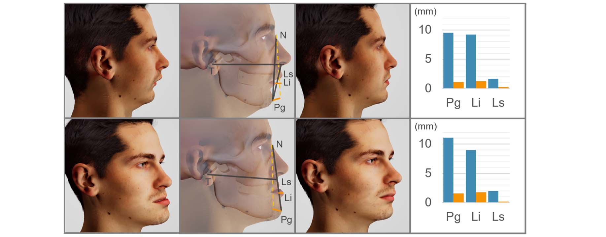
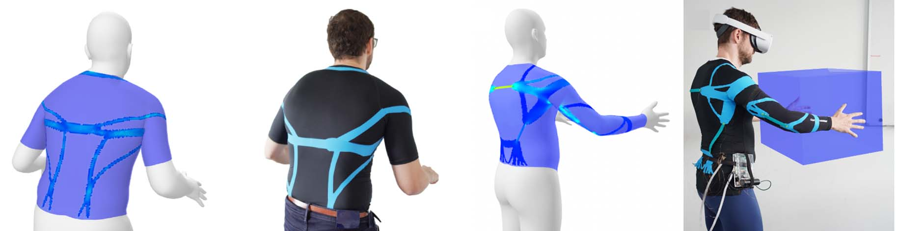
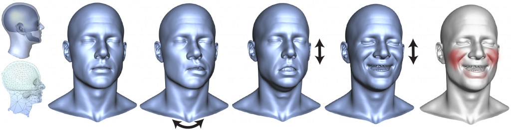

Differentiable Biomechanical Simulation

The advancement of digital humans and biomechanical simulation is transforming fields ranging from medicine to robotics and virtual reality. By developing computational models of the human body, we can gain deeper insights into movement, injury mechanics, and personalized healthcare. Simulation enables predictive modeling for surgical planning, ergonomic design, and virtual avatars with realistic motion and deformation. However, accurately capturing the complex interplay of soft tissue mechanics, skeletal dynamics, and neuromuscular control remains a significant challenge. Our research focuses on bridging this gap through physics-based simulations, data-driven modeling, and AI-enhanced techniques, pushing the boundaries of digital human representation for real-world applications.


